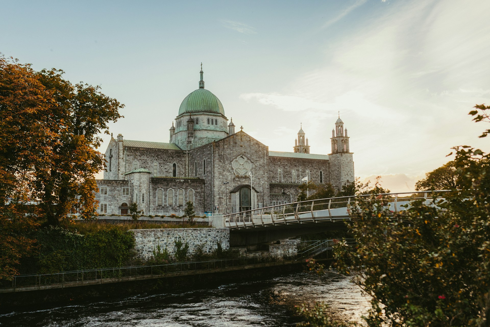

History of Galway, Ireland
Stair na Gaillimh
Medieval Galway
Galway City was founded in 1124 by the King of Connacht and the High King of Ireland, Tairrdelbach Ua Conchobair. It was originally built as both a naval base and a fort at the mouth of the River Corrib along Galway bay, with the fort given the name Dún Bhun na Gaillimhe.
The arrival of Anglo-Norman settlers in Ireland between 1169-1170 would eventually lead to a power change in Galway. This happened in 1235, when Galway was invaded by Richard de Burgo, who was able to successfully capture the fort. The son of Richard, William de Burgo would go on to build the city walls of Galway to help prevent a future invasion of the city.
As Galway grew, St. Nicholas’s Church was built in 1320, which can still be seen in the city in the present day. In the 14th Century, St. Nicholas became the Patron Saint of Galway. This was due to St. Nicholas’ being the Patron Saint of merchants and sailors, which was fitting for Galway as it had a thriving merchant and sailing economy.
An important aspect of Galway’s history was the creation of the Fourteen Tribes, who were 14 families with great influence on Galway and are the origin of the city being called The City of Tribes. Where the tribes got their beginning was under Richard II, when in 1396 he granted a charter for the city. The names of the 14 Tribes were:
- Athy
- Blake
- Bodkin
- Browne
- D'Arcy
- Dean
- Font
- French
- Joyce
- Kirwan
- Lynch
- Martin
- Morris
- Skerrit
Some notable events that happened at the end of the Middle Ages and the beginning of the Modern Age. In 1473 a fire almost destroyed Galway. In 1485, the first mayor of Galway was elected, with the first mayor being Pierce Lynch of the Lynch family. In 1477, Galway was visited by Christopher Columbus. In 1520, Dunguaire Castle was built by the O’Hynes clan. In 1584, the Spanish Arch was built, which is now an important landmark within Galway.
Pre-19th Century Galway
An important figure of Galway Bay during the later half of the 16th Century was the Pirate Queen Grace O’Malley, also known as Gráinne Mhaol. While she was not from Galway, she was from nearby and at her peak she had great influence in the area. She eventually came into conflict with the English as she was a threat to their control over Ireland’s western coast. The conflict was ended by Grace O’Malley and Queen Elizabeth I meeting, ending with Grace O’Malley’s son being released from English custody and her being able to continue with her pirating so long as she didn’t interfere with the English too much.
During the middle of the 1600s, Galway was put under siege by the forces of Oliver Cromwell during his war to pacify Ireland. While the city walls were able to protect the city from his attack, Cromwell’s armies were still able to prevent commerce from entering the city. This led to the city surrendering in 1652. After the surrender, some of the fourteen tribes fled to the countryside while over half of the poor in Galway were sold into slavery by Cromwell’s forces. The effects of Cromwell's siege took a long time for Galway to recover from.
Another important change that happened during the 1600s was the enacting of the Irish Penal Laws of 1695. These laws were made to try and force the Irish people to convert to Protestantism. These laws had many effects, including banning Catholics from teaching, banning Catholics from voting or holding elected office, restricting the travel of Catholics, fining Catholics for not going to Protestant Worship, and many other restrictions.